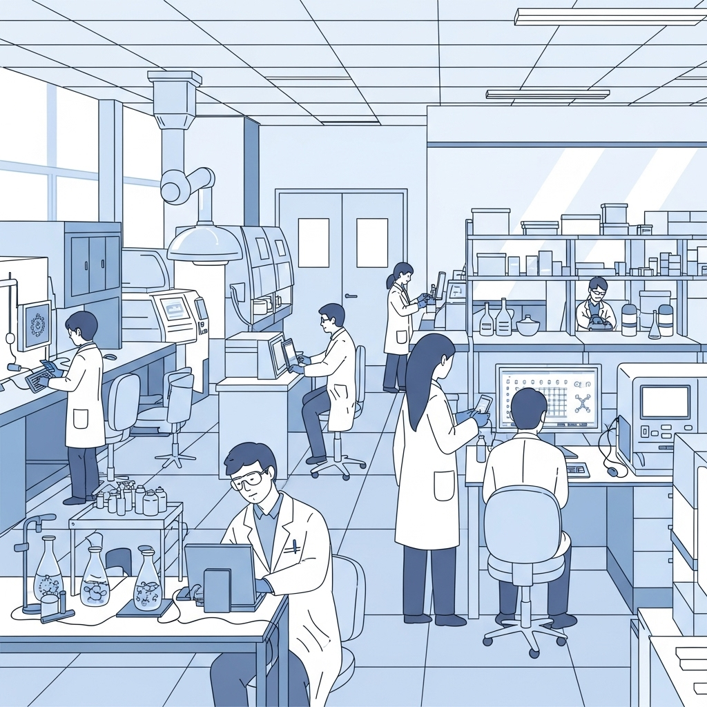
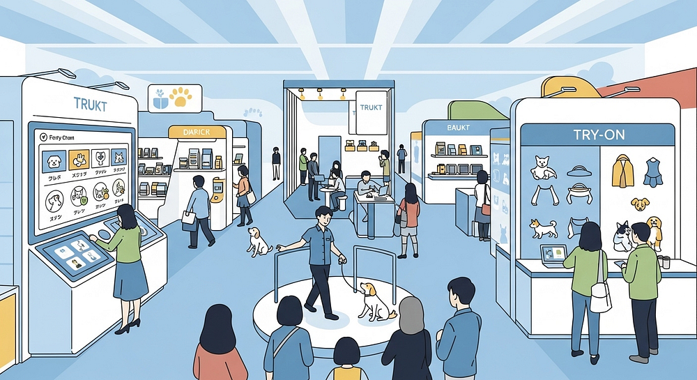
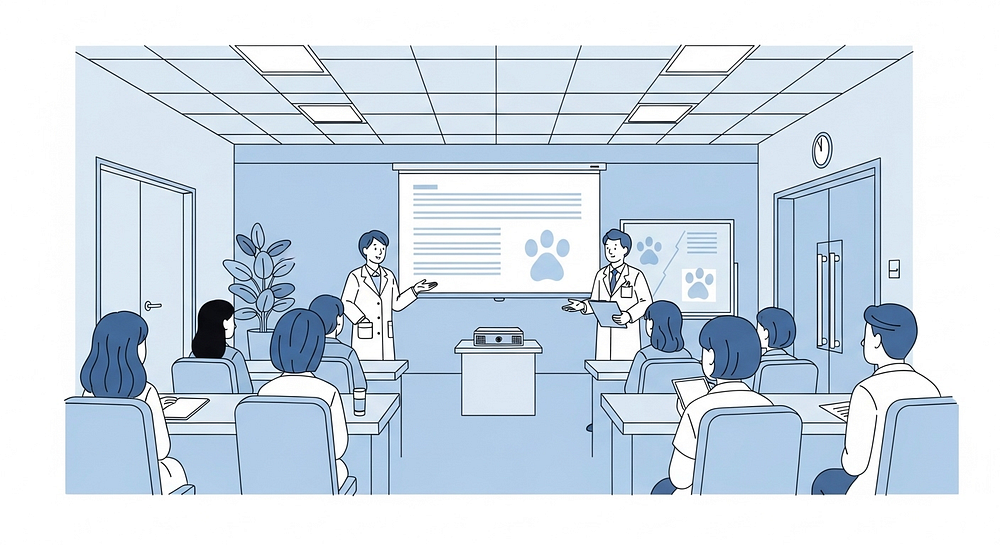

sistar company - sistar intl - bases
bases
"SISTAR Bases & PT. SISTAR Indonesia Field Operations — Anchoring our borderless digital galaxy with localized regulatory, repacking, and distribution hubs across 8 strategic nations."
▫️ PT. SISTAR Indonesia (SCI) — 13+ Years of ASEAN Market Leadership
Operating at the heart of Southeast Asia, PT. SISTAR Indonesia serves as our premier commercial and operational anchor for container-scale volume deals:
- • Established Local Infrastructure & Trust: Backed by over 13 years of active Indonesian corporate operations, veterinary clinic networks, and wholesale distribution channels across Jakarta, Cibubur, and major regional hubs.
- • Regulatory Tunneling & Local GMP Sachet Repacking: Streamlines Kementan, NIE, and BPOM registrations while operating Dual-Stream ODM (bulk raw material import + localized single-dose sachet repacking at Rp 1,320/unit).
- • Omnichannel Marketplace Dominance: Connects offline B2B clinic and farm supply directly with 20x superposition stores across Shopee and Tokopedia.



▫️ Global SISTAR Bases & Area Manager Network
Beyond Indonesia and our Seoul HQ, SISTAR Bases provide physical and cloud-native launchpads for regional Area Managers and Challengers worldwide:
- • Eight Entangled International Nodes: Synchronizes commercial execution across Korea (SCK), Indonesia (SCI), Vietnam (SCV), Singapore (SCS), China (SCC), Japan (SCJ), USA (SCU), and India (SCIND).
- • Hybrid Work & Fulfillment Hubs: Each regional base functions simultaneously as a collaborative Vibe-Working hub for local Challengers, a micro-fulfillment node (Space Sharing), and a B2B partner showroom.


